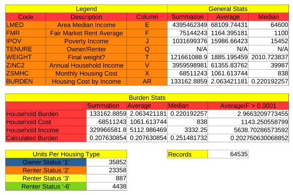
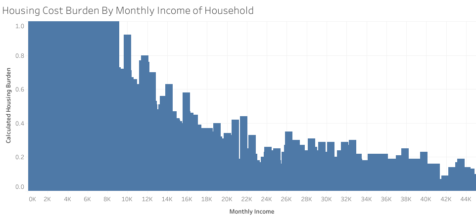

Data Set Description
The Housing Affordability Data System (HADS) is a set of files derived from the 1985 and later national American Housing Survey (AHS) and the 2002 and later Metro AHS. This system categorizes housing units by affordability and households by income, with respect to the Adjusted Median Income, Fair Market Rent (FMR), and poverty income. It also includes housing cost burden for owner and renter households. These files have been the basis for the worst case needs tables since 2001. The data files are available for public use, since they were derived from AHS public use files and the published income limits and FMRs. We are providing these files give the community of housing analysts the opportunity to use a consistent set of affordability measures.
https://www.huduser.gov/portal/datasets/hads/hads.html
Observations
Categories
- housing units by affordability
- households by income
- housing cost burden by household type
Significant Metrics
- Ajusted Median Income (LMED)
- Fair Market Rent (FMR)
- poverty income (IPOV)
- household type (TENURE)
- household income (ZINC2)
- housing income ratio (BURDEN)
Inquiries
- What is the correlation between housing cost burdern and household income?
The housing cost burden (BURDEN) over household income (ZINC2) - What is the correlation between housing cost burden and poverty income?
The housing cost burden (BURDEN) over poverty income? - What is the relationship between housing cost burden and household type?
The average of housing cost burdern (BURDEN) per household type (TENURE). - What is the relationship between poverty income and household type?
The average poverty income (IPOV) per household type (TENURE). - What is the correlation between fair market rent and housing cost burden?
The housing cost burden (BURDEN) over fair market rent (FMR).
Process
Steps
- Discovered data from a data.gov entry by file type and category (csv format and economic issues).
- Analysed synopsis of data set for keywords, which led to observations and inquiries.
- Downloaded and skimmed HADS documentation, which led to revisions of inquiries.
- Downloaded and opened the ASCII version zip for 2013
- Attempted to import file into Google sheets, but the csv file is 53 mb.
- Opened csv file in gedit and libreoffice calc; there are 64,535 records with 73 fields per record.
Queue time to think about best approaches with a moderately sized data set; options include:- office software like libre office calc
- a database management system like libreoffice base or mysql
- an object relational model like jpa coupled with hibernate in Java
- Records need to be filtered by values of several metrics.
- Values should be plotted on a graph to visualize cross sections of data.
Associated Sources
- Housing Affordability Documentation
- Housing Affordability Data Set: 30.5mb download in ods format.
Appendix A starting on page 17 is relevant to interpreting data fields.
Analytical/Documentation Tools
- libreoffice calc to format, store and visualize results
- mysql workbench to query data set
- sublime text to edit html & css
Downloading Details
- Downloaded a 53 mb comma seperated value text file.
- Imported file to officelibre calc and saved in the ods format.
- Downloaded provided HADS document to accurately interpret field names.
Formatting Details
- The data set is in comma seperated format with a header of fields and comma seperated values in records with one record per line. The seperator in libreoffice are cells and with one record per row.
Uploading Details
- Uploaded all files to git repository.
- Linked all relevant files in the index.html file for references and requirements.
Analysis
Statistics
 Interpretation
Monthly household income is negatively correlated to the housing cost burden of home owners